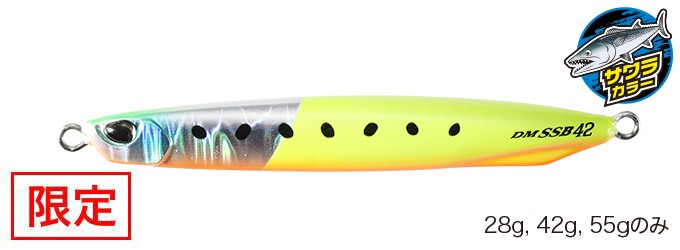
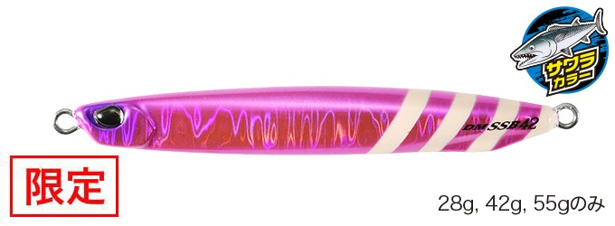
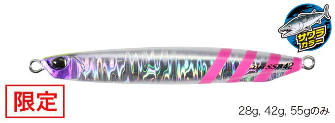
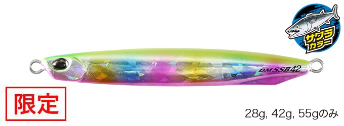

ドラッグメタル キャスト SSブレード
（Drag Metal Cast SSBLADE）
ドラッグメタル キャスト SSブレードはDUO（デュオ）のスイミングブレードジグです。
投げて巻くだけで使える、スリムボディのブレードジグ。スーパースリムボディは空気抵抗が少なく圧倒的な飛距離を出せ、ベイトライクなシルエットは食い渋るターゲットにも効果的です。標準装備のコロラドブレードが逃げ惑う小魚のフラッシングを演出します。

画像出典:DUO公式HP
スペック
- メーカー
- DUO（デュオ）
- タイプ
- スイミングブレードジグ
- 全長／自重
- 78mm／28g、88mm／42g、97mm／55g、111mm／80g
- フック（28g・42g）
- フロント：シングルアシスト#14／リア：ブレードフックシングル#13
- フック（55g・80g）
- フロント：シングルアシスト#15／リア：ブレードフックシングル#15
- ターゲット
- サワラ・青物・根魚
- 価格
- 1,100〜1,265円（税込）
▼今すぐチェック

ドラッグメタル SSブレードの特徴
投げて巻くだけ。スーパースリムボディのスイミングブレードジグ
-
スーパースリムボディで圧倒的な飛距離
空気抵抗の少ないスーパースリムボディで、圧倒的な飛距離を出せます。
-
食い渋りに効くベイトライクなシルエット
ベイトに近い細身のシルエットで、食い渋るターゲットにも効果を発揮します。
-
コロラドブレードのフラッシング
標準装備のコロラドブレードが、逃げ惑う小魚のフラッシングを演出します。
ドラッグメタル SSブレードの使い方
基本は投げて巻くだけ。着底またはカウントダウンでレンジを決めたら、ただ巻きでブレードを回して誘います。
誰でも簡単にショアジギングができるルアーなので、まずは巻き速度を変えながら、反応のあるスピードを探してみましょう。
ドラッグメタル SSブレードの得意な状況
ショアからサワラや青物を狙う場面。飛距離が出るので、遠くのナブラや潮目まで届かせたいときに向いています。食い渋りで普通のジグに反応しないときにも試したいルアーです。
ワンポイント
同じドラッグメタル キャストには、スリム・ショット・TGなどのバリエーションもあります。ブレードのフラッシングで誘いたいときはSSブレード、ジャークやフォールで誘いたいときはノーマルのジグと使い分けると便利です。
サワラ向けブレード系ジグの使い分け
| モデル | 全長／自重 | 得意な場面 |
|---|---|---|
| ブレードショーテル | 30〜130g（7サイズ） | ボートのブレードジギング専用。極太ボディで高速巻きでも回りにくい |
| ドラッグメタル キャスト SSブレード | 28・42・55・80g | スーパースリムボディで飛距離。投げて巻くだけのショアジギング向け（本記事のモデル） |
| メタルマジックスリム | 30・40・50・60g | スリムロングボディのスピンテールジグ。やや大きめのベイトに |
| メタルマジックTG | 20〜60g | タングステンの極小シルエット。マイクロベイトパターンに |
同じブレード系でも、ボートで縦に使うか、ショアから投げて巻くか、ベイトの大きさで選ぶルアーが変わります。釣り方とベイトに合わせて使い分けましょう。
人気カラー
全14色の中から4色を紹介します（画像は42gのもの。一部は限定カラーです）。

PPA0890 UVフラッシュ&チャートイワシGチャートとイワシを組み合わせたアピールカラー。

PPA0891 UVセクシーピンクZGピンク系にゼブラグローを組み合わせたカラー。朝マズメに。

PPA0892 UVシルバーPZGシルバー系のフラッシングカラー。澄み潮のデイゲームに。

PKA0893 UVコットンキャンディGBパステル系のアピールカラー。ほかの色で反応がないときのローテーションに。
画像出典:DUO公式HP
ドラッグメタル SSブレードに似ているルアー
-
 ブレードショーテル
SHOUT!
詳細はこちら＞
ブレードショーテル
SHOUT!
詳細はこちら＞
サワラがメインターゲットのブレードジギング専用テイルブレードジグ。ボートから狙うときに。
-
 メタルマジックスリム
AQUAWAVE
詳細はこちら＞
メタルマジックスリム
AQUAWAVE
詳細はこちら＞
スリムロングボディのスピンテールジグ。少し大きめのベイトパターンに。
-
 ジャックアイマキマキ
ハヤブサ
詳細はこちら＞
ジャックアイマキマキ
ハヤブサ
詳細はこちら＞
ただ巻き専用のブレードジグ。巻くだけでサワラや青物を狙いたいときに。